Карточка договора
Как договор перестал быть просто файлом и стал единой точкой работы для менеджера
Как договор перестал быть просто файлом и стал единой точкой работы для менеджера
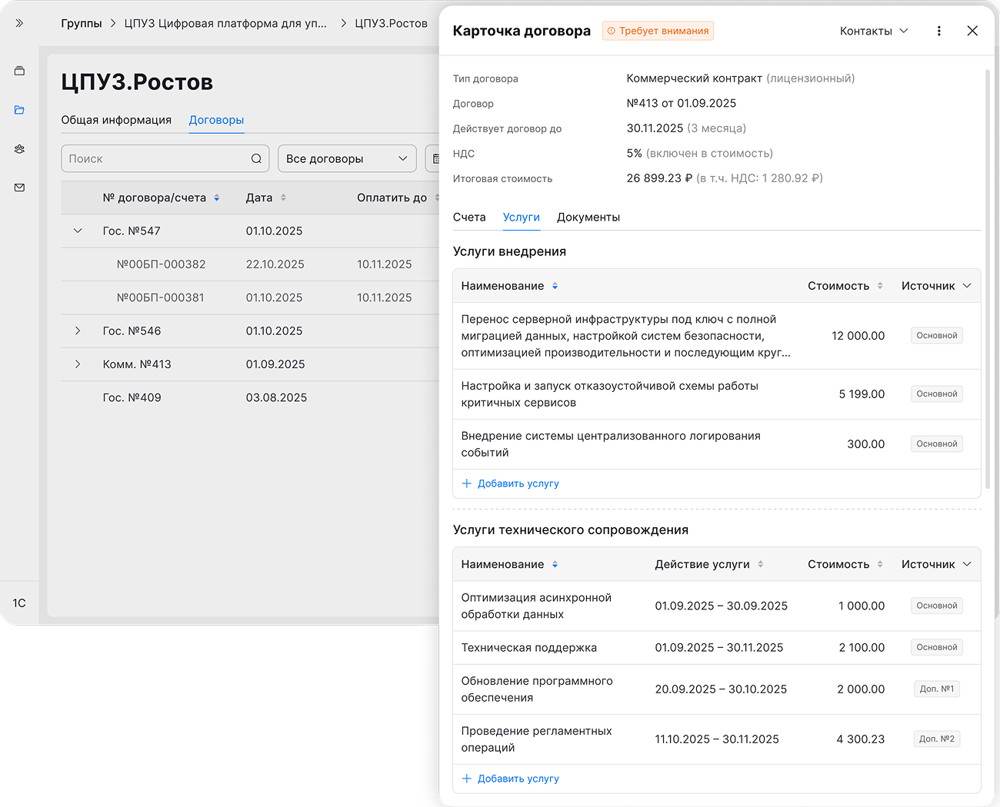
Чтобы собрать полный контекст по договору, менеджер переключался между 1C, корпоративным сайтом и своими заметками
Ключевые сценарии (выставить счёт → оформить УПД → проверить документы) занимали много времени и были подвержены ошибкам
Работа с контрагентами велась в 1C, а процессы коммерции и юр. отдела — в корпоративном сайте. Договор не был единой точкой работы. Чтобы понять статус и следующие шаги, менеджер переключался между системами, сопоставлял данные вручную и держал последовательность действий в голове. Это тормозило ключевые сценарии и повышало риск ошибок
Провёл глубинные интервью с менеджерами коммерческого отдела, выявил основные шаги и боли при работе с договором, сформулировал job stories и ключевую гипотезу решения. Работал в связке с продуктовым менеджером
После получения задачи провёл интервью с коллегами из коммерческого отдела и на их основе собрал main steps и ограничения
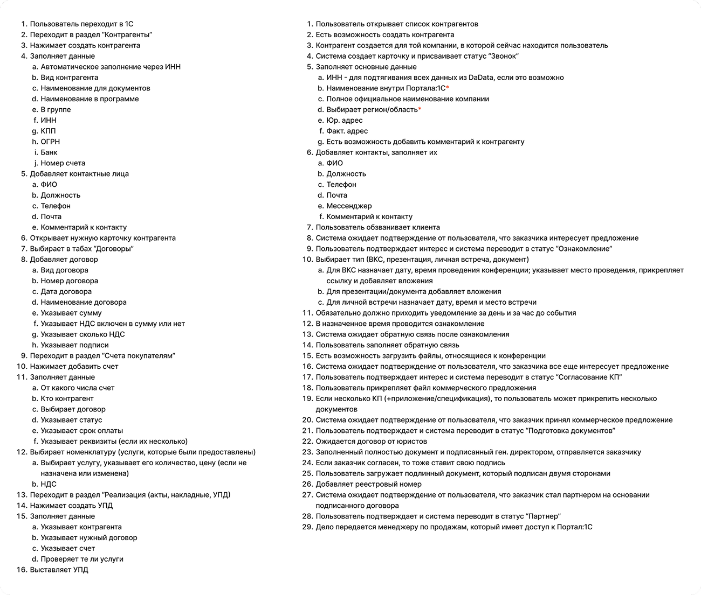
Чтобы глубже понять предметную логику, самостоятельно изучил текущую работу с договором в 1С через 1С:Fresh — веб-версию системы, доступную в браузере
Разобрал ключевые сценарии: связь договора со счетами, УПД и доп. соглашениями, статусную модель документов, а также создание контрагентов и услуг. Это позволило выделить паттерны, которые легли в основу логики интерфейса
Сформулировал job stories, которые охватывали полное взаимодействие с договором
На основе интервью, main steps и job stories была сформулирована ключевая гипотеза решения
Если мы объединим все связанные документы на одном экране договора и внедрим систему триггерных уведомлений (особенно для УПД и госконтрактов), то это избавит пользователя от хаотичного переключения между разделами и локального хранения файлов, а также минимизирует риски просрочек и финансовых потерь
Первым шагом собрал data model. Определил, какие сущности связаны с договором, какие поля обязательны для договора, контрагента, счета и УПД, и какие зависимости между ними нужно учесть в интерфейсе
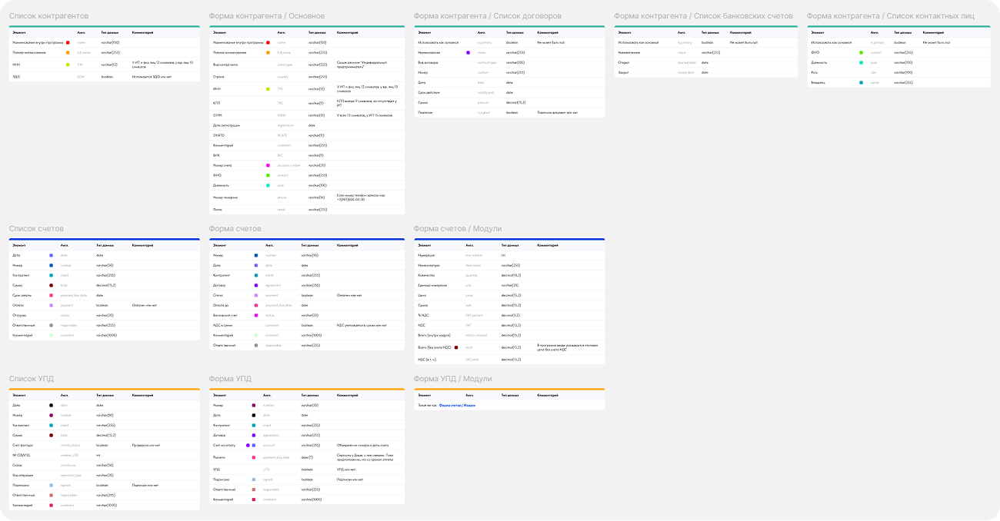
Отдельно проработал статусную модель и переходы между статусами
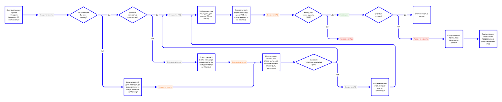
Следующим этапом стало создание единого пространства для работы с договорами и счетами
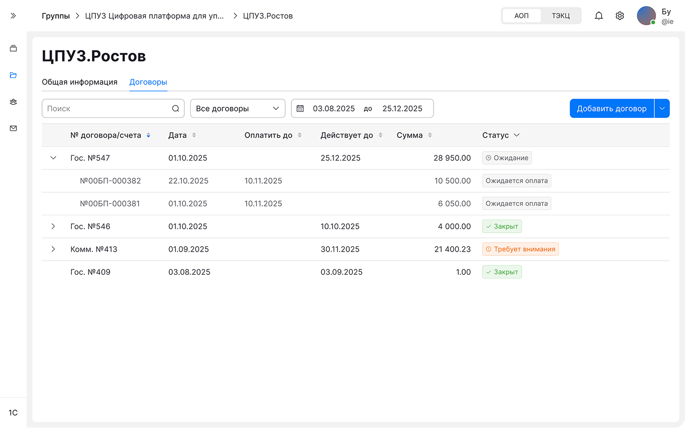
Первая итерация выглядела следующим образом
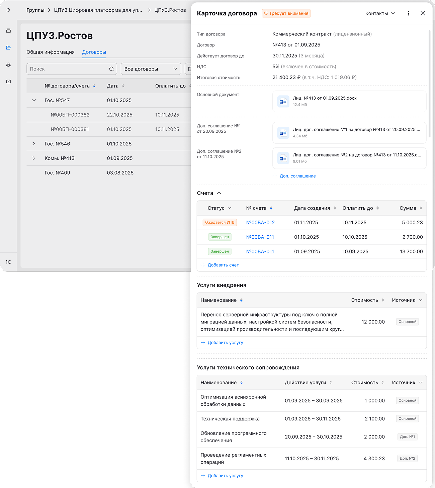
Первая итерация юзабилити-тестирования показала, что менеджерам очень важно держать под рукой не только доп. соглашения, но и сопутствующие файлы (акты, технические задания, спецификации и сканы)
Вдобавок, необходимо разгрузить длинное боковое окно (drawer), я перепроектировал навигацию с помощью табов
Также для «услуг внедрения» не хватало поля «количество». В отличие от тех. сопровождения, одна и та же услуга внедрения может оказываться несколько раз за месяц
Первым делом перепроектировал навигацию, все данные все еще в одной сущности, но выстроены разделы по иерархии
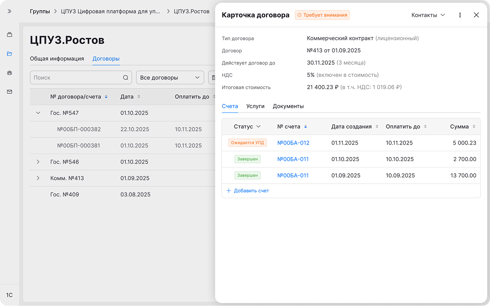
Для услуг внедрения теперь идет расчет количества
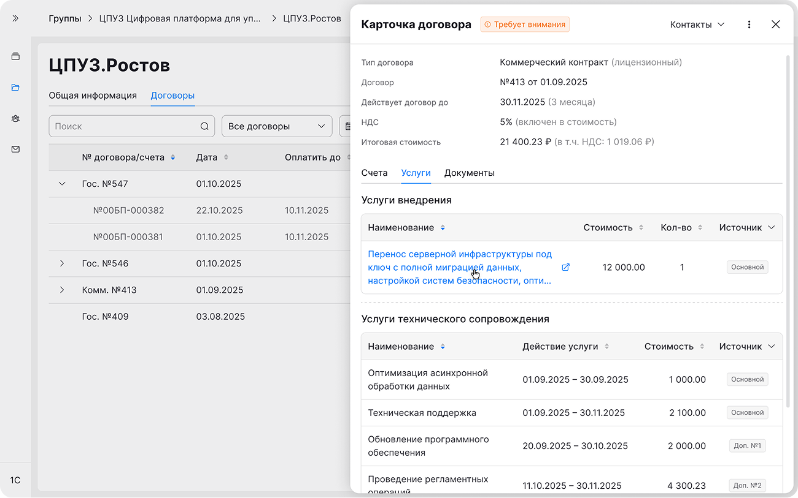
Во вкладке документы теперь можно и хранить вложенности, относящиеся к договору
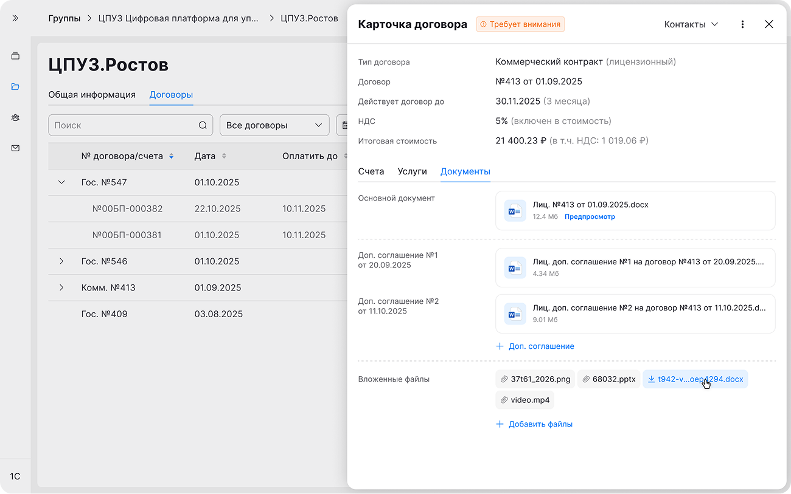
Итоговый вид всех сценариев для передачи в разработку
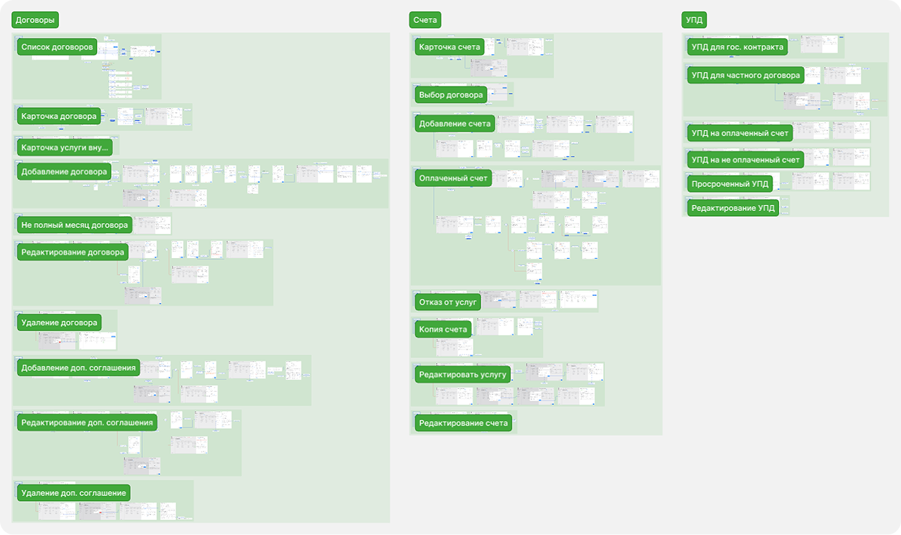
При проверке обновленного интерфейса, я провел второй раунд юзабилити-тестирования на кликабельном прототипе. Пользователям были предложены те же сквозные сценарии: проверка договора, выставление счета и формирование УПД для госорганов
Скорость работы с договором выросла на 40%, благодаря навигации по табам и автоматическому подтягиванию данных из договора, пользователи перестали тратить время на переключение между 1С, корпоративным сайтом и локальными папками
Автозаполнение избавило менеджеров от рутины и снизило количество ошибок на 17%. Теперь система сама подтягивает нужные реквизиты и вовремя напоминает про УПД, снимая с человека страх что-то упустить или ошибиться в цифрах
В результате работы над проектом я спроектировал концепт единой точки работы с договором, превратив его из статичного файла в интерактивный хаб для менеджера. Все связанные сущности (счета, акты, УПД) теперь бесшовно собираются в одном интерфейсе
Продукт готовится к разработке. Для оценки успешности решения на продакшене совместно с PM мы зафиксировали целевые метрики, на которые будем опираться после релиза: ASAT, ER и ToT
Этот проект стал отличным вызовом. Работа с DMS-сценариями (Document Management System) требует глубокого понимания предметной области. Я научился не просто рисовать экраны, а сначала разбираться в тяжелой бизнес-логике, дата-моделях и связях сущностей